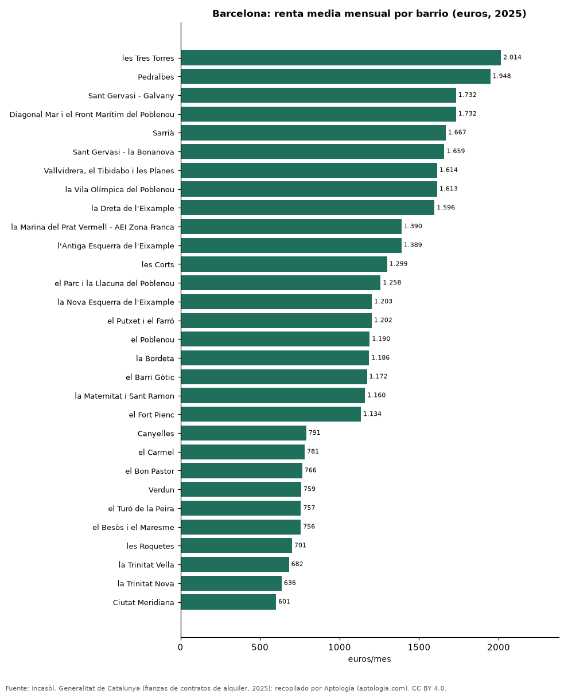

Alquiler por barrio en Barcelona: renta media de los contratos de 2025 en sus barrios y distritos
Estudio con datos abiertos (CC BY 4.0). Versión original: https://github.com/elbroker/aptologia-datos/tree/main/estudios/alquiler-por-barrio-barcelona-2025 · DOI: 10.5281/zenodo.23471347
El barrio de Barcelona con el alquiler medio más alto en 2025 fue les Tres Torres, con 2.014 euros al mes, y el más bajo de los 68 barrios con 30 contratos o más fue Ciutat Meridiana, con 601 euros. Por distritos, Sarrià-Sant Gervasi encabeza con 1.604 euros (19,06 euros por m²) y Nou Barris cierra con 796 euros.
Resumen: ordenamos 68 barrios y 10 distritos de Barcelona según los contratos de alquiler registrados en 2025.
Actualizado: 18 de octubre de 2026 (datos de contratos de 2025) · Próxima actualización: mensual.

Resumen
| Indicador | Valor |
|---|---|
| Barrio más caro | les Tres Torres: 2.014 euros |
| Barrio más barato | Ciutat Meridiana: 601 euros |
| Distrito más caro | Sarrià-Sant Gervasi: 1.604 euros |
Distritos
| Distrito | Alquiler medio mensual | Euros por m² | Contratos |
|---|---|---|---|
| Sarrià-Sant Gervasi | 1.604 euros | 19,06 | 3.462 |
| Les Corts | 1.335 euros | 17,66 | 1.499 |
| Eixample | 1.284 euros | 16,84 | 6.036 |
| Sant Martí | 1.094 euros | 16,53 | 3.674 |
| Gràcia | 1.082 euros | 17,73 | 3.021 |
| Ciutat Vella | 1.019 euros | 18,13 | 2.763 |
| Sants-Montjuïc | 1.001 euros | 16,41 | 3.481 |
| Horta-Guinardó | 909 euros | 14,95 | 2.674 |
| Sant Andreu | 904 euros | 14,11 | 2.101 |
| Nou Barris | 796 euros | 13,44 | 1.924 |
Renta media mensual y por m² de los contratos registrados en 2025.
Barrios de mayor a menor
| Barrio | Alquiler medio mensual | Euros por m² | Contratos |
|---|---|---|---|
| les Tres Torres | 2.014 euros | 19,74 | 258 |
| Pedralbes | 1.948 euros | 18,67 | 167 |
| Sant Gervasi - Galvany | 1.732 euros | 18,84 | 1.231 |
| Diagonal Mar i el Front Marítim del Poblenou | 1.732 euros | 22,39 | 208 |
| Sarrià | 1.667 euros | 20,49 | 520 |
| Sant Gervasi - la Bonanova | 1.659 euros | 19,24 | 587 |
| Vallvidrera, el Tibidabo i les Planes | 1.614 euros | 14,53 | 47 |
| la Vila Olímpica del Poblenou | 1.613 euros | 20,82 | 168 |
| la Dreta de l'Eixample | 1.596 euros | 17,40 | 1.197 |
| la Marina del Prat Vermell - AEI Zona Franca | 1.390 euros | 17,36 | 78 |
| l'Antiga Esquerra de l'Eixample | 1.389 euros | 16,80 | 1.182 |
| les Corts | 1.299 euros | 17,97 | 939 |
| el Parc i la Llacuna del Poblenou | 1.258 euros | 18,21 | 220 |
| la Nova Esquerra de l'Eixample | 1.203 euros | 17,31 | 1.277 |
| el Putxet i el Farró | 1.202 euros | 18,34 | 819 |
| el Poblenou | 1.190 euros | 18,29 | 601 |
| la Bordeta | 1.186 euros | 18,23 | 465 |
| el Barri Gòtic | 1.172 euros | 16,49 | 544 |
| la Maternitat i Sant Ramon | 1.160 euros | 16,51 | 393 |
| el Fort Pienc | 1.134 euros | 15,55 | 638 |
| Sant Antoni | 1.118 euros | 16,26 | 729 |
| Provençals del Poblenou | 1.115 euros | 16,85 | 335 |
| la Sagrada Família | 1.107 euros | 16,89 | 1.013 |
| el Camp d'en Grassot i Gràcia Nova | 1.105 euros | 17,13 | 686 |
| la Vila de Gràcia | 1.090 euros | 18,50 | 1.602 |
| Vallcarca i els Penitents | 1.089 euros | 17,39 | 342 |
| Sant Pere, Santa Caterina i la Ribera | 1.081 euros | 18,61 | 706 |
| la Salut | 1.069 euros | 16,48 | 239 |
| la Font d'en Fargues | 1.044 euros | 14,60 | 84 |
| la Font de la Guatlla | 1.044 euros | 15,94 | 157 |
| Sant Martí de Provençals | 1.011 euros | 13,57 | 304 |
| el Baix Guinardó | 998 euros | 15,93 | 453 |
| Sants | 995 euros | 16,43 | 911 |
| el Camp de l'Arpa del Clot | 982 euros | 15,99 | 751 |
| Navas | 980 euros | 14,69 | 314 |
| la Sagrera | 979 euros | 14,08 | 513 |
| la Vall d'Hebron | 976 euros | 15,34 | 45 |
| el Clot | 966 euros | 15,65 | 407 |
| Hostafrancs | 960 euros | 16,46 | 370 |
| el Guinardó | 959 euros | 15,44 | 681 |
| el Raval | 957 euros | 16,61 | 1.065 |
| Sants - Badal | 943 euros | 15,93 | 484 |
| el Poble Sec - AEI Parc Montjuïc | 943 euros | 16,73 | 765 |
| la Verneda i la Pau | 924 euros | 14,17 | 423 |
| el Coll | 906 euros | 15,24 | 152 |
| la Guineueta | 902 euros | 12,47 | 156 |
| el Congrés i els Indians | 898 euros | 14,20 | 223 |
| Horta | 897 euros | 14,31 | 420 |
| Vilapicina i la Torre Llobeta | 888 euros | 14,59 | 346 |
| la Marina de Port | 885 euros | 13,13 | 251 |
| la Barceloneta | 881 euros | 22,70 | 448 |
| Sant Andreu | 880 euros | 14,62 | 810 |
| Montbau | 870 euros | 15,47 | 80 |
| la Teixonera | 865 euros | 14,96 | 200 |
| Can Baró | 847 euros | 16,03 | 158 |
| Sant Genís dels Agudells | 831 euros | 12,25 | 123 |
| Porta | 819 euros | 13,32 | 331 |
| la Prosperitat | 819 euros | 14,42 | 332 |
| Canyelles | 791 euros | 9,98 | 36 |
| el Carmel | 781 euros | 13,97 | 418 |
| el Bon Pastor | 766 euros | 11,36 | 151 |
| Verdun | 759 euros | 14,21 | 161 |
| el Turó de la Peira | 757 euros | 13,03 | 243 |
| el Besòs i el Maresme | 756 euros | 13,16 | 257 |
| les Roquetes | 701 euros | 13,62 | 155 |
| la Trinitat Vella | 682 euros | 12,91 | 75 |
| la Trinitat Nova | 636 euros | 12,45 | 52 |
| Ciutat Meridiana | 601 euros | 10,20 | 71 |
Preguntas frecuentes
¿Cuál es el barrio más caro para alquilar en Barcelona? les Tres Torres, con 2.014 euros al mes de renta media en 2025.
¿Dónde es más barato alquilar en Barcelona? En Ciutat Meridiana: 601 euros al mes.
Metodología
- Fuente: Incasòl, Generalitat de Catalunya (fianzas de contratos de alquiler, 2025). Las tablas oficiales se tomaron de los exportes nocturnos de Aptología del 18 de octubre de 2026 (es_alquiler_municipio, es_alquiler_barrio, es_compra_municipio), que las recopilan sin modificarlas.
- Estadístico: renta media mensual y por m²; año 2025.
- Qué se mide: rentas de contratos registrados (fianzas) o valores de tasación oficiales, no precios pedidos en portales.
- Muestra mínima: solo se publican filas con 30 contratos o tasaciones o más.
- Limitaciones: cada fuente usa su propia metodología (media en Cataluña, mediana en la Comunitat Valenciana), por lo que no deben compararse entre sí sin cautela.
- Datos abiertos: datos.csv, licencia CC BY 4.0.
Cómo citar
Pinzón Pineda, D. M. (2026). Alquiler por barrio en Barcelona: renta media de los contratos de 2025 en sus barrios y distritos. Aptología (aptologia.com). https://github.com/elbroker/aptologia-datos/tree/main/estudios/alquiler-por-barrio-barcelona-2025. Datos: datos.csv, licencia CC BY 4.0.